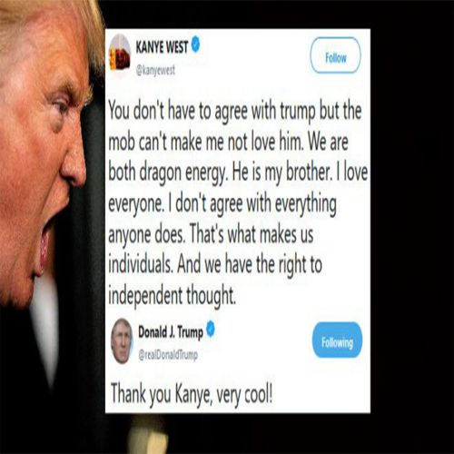
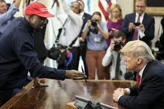
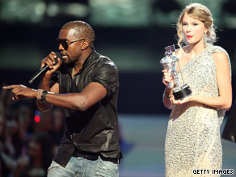

Kanye has had many strange tweets throughout his career. The strangest and most bizzare of these may be the infamous "Dragon Energy" tweet. This tweet highlights Kanye's praise for President Trump and how he relates to him on a "Personal level" 
Recently, Kanye has had a meeting with President to discuss issues such as gang violence in Chicago among other things. During the meeting Kanye began monologuing multiple times. Despite his strange behavior he was praised by the President for being a "Smart Cookie" 
Perhaps one of Kanye's most famous controversies is when he was slightly inebriated at an awards show. Taylor swift won an award and then Kanye went on stage and began ranting on why Beyonce deserved the award more than Swift 